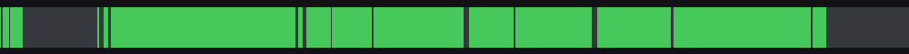

Company · Robot learning data
Cygnus Robotics
Building data curation tools for robot learning: inspect demonstrations, preserve recovery behavior, and trace every retained frame back to its source.

Source timestamps · retained frames · review decisionsThe problem
A task label can hide failed attempts, recoveries, and long idle stretches. Removing frames without checking that structure can discard the behavior a policy needs to learn.
Implementation
The development pipeline combines temporal visual change, conservative perceptual deduplication, protected motion windows, and an optional CLIP/Gemma review. It writes a frame-level manifest and review video so every keep decision can be inspected.
Evidence
The public company site includes manipulation demonstrations, policy comparisons, and an autonomous-driving smoke test. Local development also includes LeRobot exports and audits of the retained-frame mapping.
Limits
Heuristic and model-generated phase labels require review. The examples demonstrate curation behavior on specific recordings. Downstream robot policy improvement has not been established by these demonstrations.